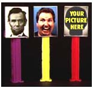
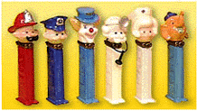

The core belief of the Church of Pez supports the potential for humans and all sentient creatures to lift their heads up by conscious choice and dispense of much candy. Here are the four legs upon which we stand:
There is no Pez except the Pez within us. The Church celebrates the infinite candy-giving potential of humankind. In this potential we see our own divinity. We look not to some supreme power to show us the way, but rather to ourselves and each other to lift our heads, candy by candy, into sugary (yet slightly tart) godhood.
 The Church of Pez is a Trans-pez-anist religion. Trans-pez-anism is the belief that through technology of plastics it is possible for us to transform ourselves into the candy dispensers that we wish to become, and in so doing so fundamentally transcending the limitations of the so-called human condition.
Intentional Dispensing is the act of realizing our ability to choose our every behavior and belief, as well as the very candy that we dispense. Those who live intentionally define who they want to be and how they want to live, and which flavors to hold, and then create that reality, internally and externally. Unlike some religions, we believe that life is to be enjoyed. Complete enjoyment comes from play, from pleasure, and from sharing small pieces of sweet-tart candy.
 We believe in the power of individuals to form a community - to work and play together and support each other in our attempts to achieve a wider variety of flavors. In so doing it's possible to create a healthy, vibrant candy utopia, which is capable of far more than any individual.